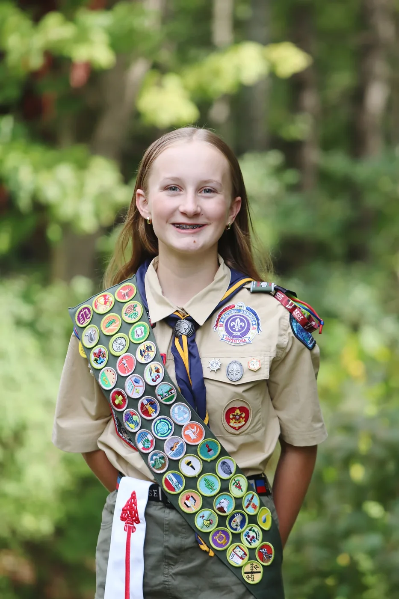
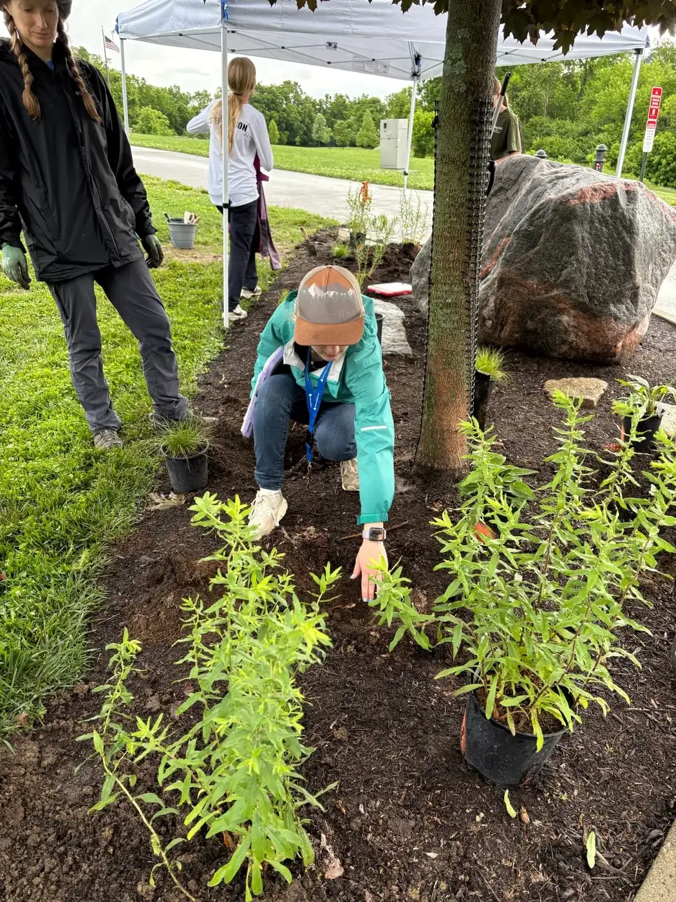
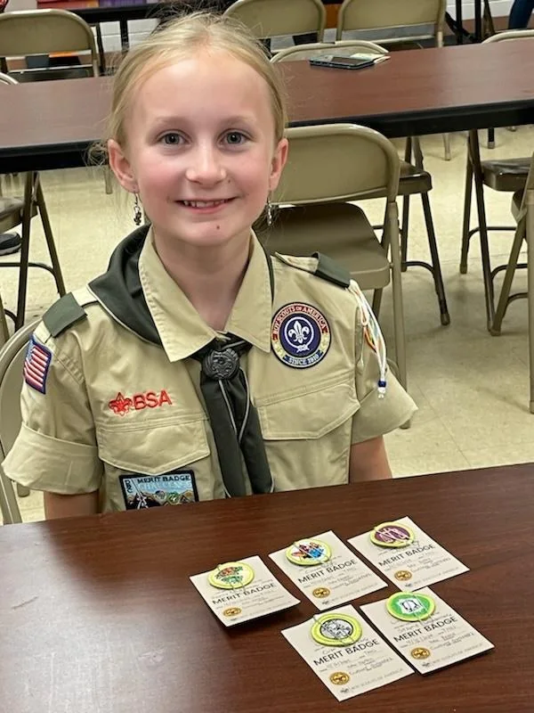
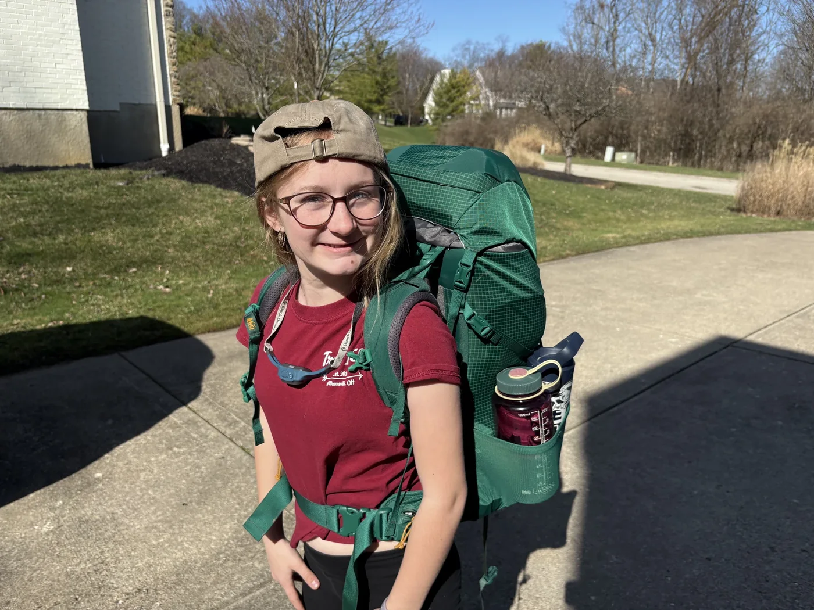
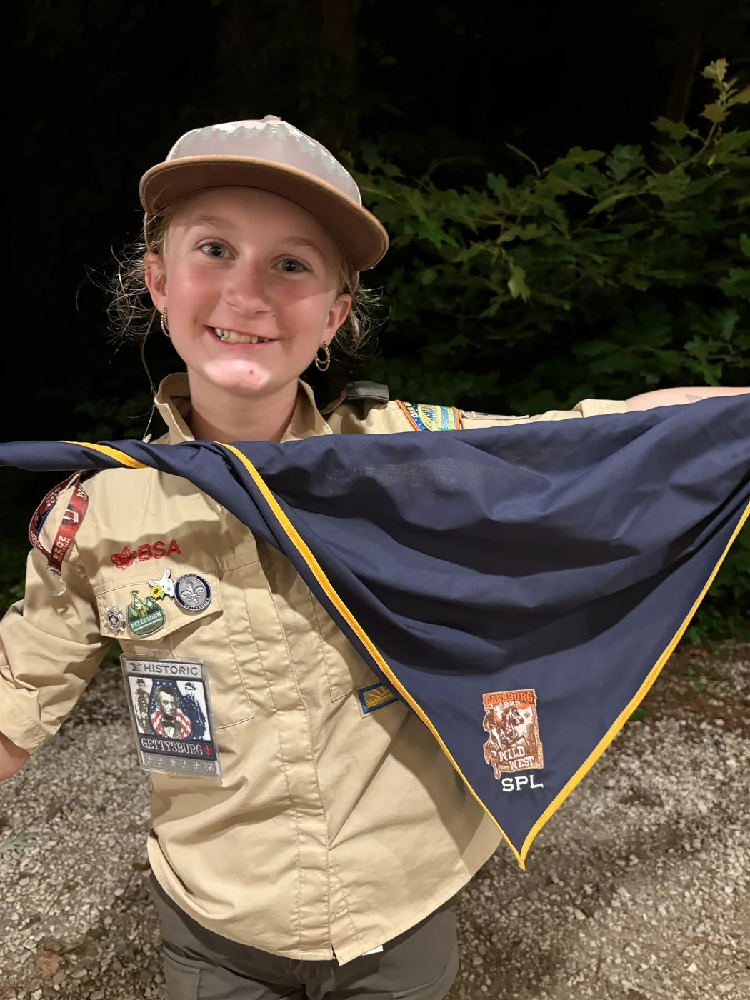
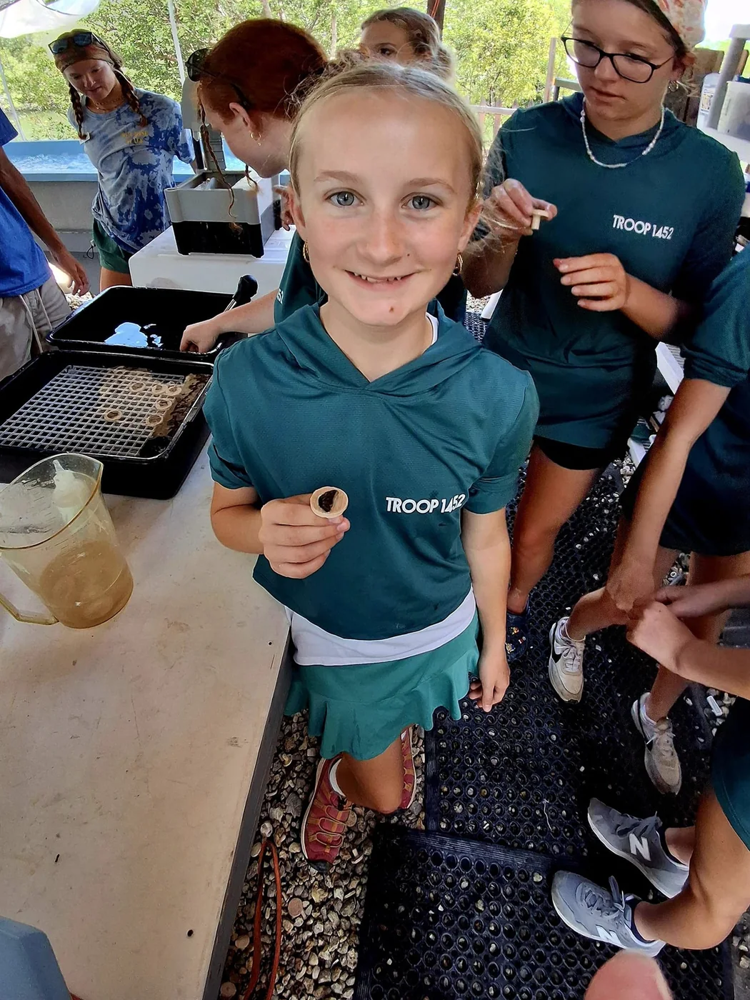
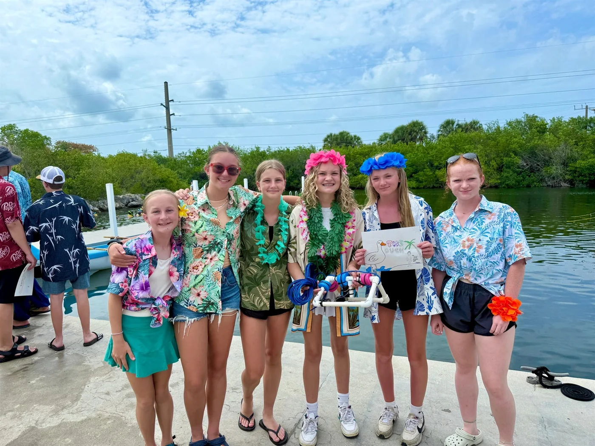
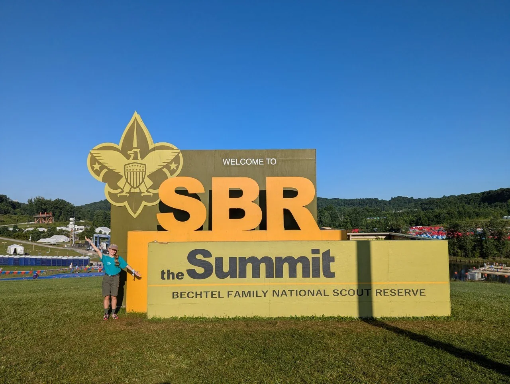

Troop Hall of Honor · HALL OF HONOR
Lucy G.
Eagle Scout ·
Backpacking, summer camp, marine science, and the National Scout Jamboree are all part of Lucy's Scouting story. Along the way, she has explored new skills, taken on leadership challenges, and put service into action.
BEYOND THE BADGE
Scouting at a glance
- Merit badges earned
- 51As of
- Eagle Palms
- 6As of
- Years in Scouting
- 7As of
Other Scouting accomplishments
- 100+ nights camping
- 500+ hours of service
- Florida Sea Base Marine STEM Adventure
- 2026 National Scout Jamboree at the Summit Bechtel Reserve
THE MOMENTS THAT MATTER
The Scouting Journey
Lucy's early Scouting experiences included fishing at an Arrow of Light campout and earning her first merit badges. Backpacking and summer camp became part of the journey as she progressed through the ranks.
At Florida Sea Base, Lucy explored coral and shells, learned about marine conservation, and helped her crew build an underwater remotely operated vehicle during a Marine STEM Adventure.
The 2026 National Scout Jamboree took her to the Summit Bechtel Reserve in West Virginia. Shooting sports, virtual reality, and adventure activities were part of the experience, alongside cooking with her crew and making friends at camp.
- Learning to lead
- For her Eagle project, Lucy organized volunteers into patrols and coordinated the work through patrol leaders. Rain, crowded work areas, and a late mulch delivery required her to adjust assignments and keep the crews moving safely.
ONE MEANINGFUL PART OF THE JOURNEY
Eagle Scout Service Project
Small Garden, Big Impact
Benefiting Anderson Park District
Lucy planned and led the creation of native pollinator gardens at Johnson Hills Park. The plantings and interpretive signs help visitors learn how even a small garden can support pollinators and biodiversity.

A LIFE OUTSIDE
From the Scout's photo album





